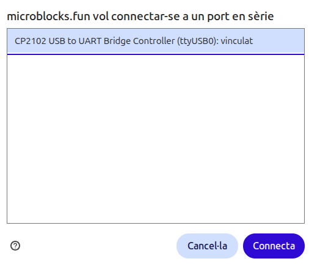

2. Els Diagrames de Flux
Abans de programar a MicroBlocks, aprenem a organitzar les ordres pas a pas amb diagrames de flux (blocs d'acció, blocs de decisió i bucles) i fem la nostra primera connexió real amb la placa física.
💡 Les 3 idees clau dels Diagrames de Flux:
- 🟦 Bloc d'Acció (Rectangle): Indica una ordre directa que la placa executa sense fer preguntes.
- 🔶 Bloc de Decisió (Rombe): Planteja una pregunta amb dues sortides possibles: SÍ o NO.
- 🔁 Diagrama Tancat (Bucle): Una fletxa torna enrere perquè el microcontrolador vigili els sensors les 24 hores.
1. Tipus de Blocs i Estructures (Oberts vs. Tancats)
Una placa ESP32 no improvisa ni té sentiments: només executa instruccions pas a pas anomenades algorismes. Abans d'obrir MicroBlocks al Chromebook, dibuixem sempre el diagrama de flux per estructurar les ordres i les decisions!
🟦 Bloc d'Acció (Rectangle)
Ordre directaIndica una acció concreta que la placa ha d'executar, sense fer cap pregunta. Té una única fletxa de sortida cap al pas següent.
🔶 Bloc de Decisió (Rombe)
Pregunta Sí / NoPlanteja una pregunta sobre un sensor que només té dues respostes possibles: SÍ (Cert) o NO (Fals). Del rombe en surten sempre 2 camins!
➡️ Diagrama de Flux Obert (Lineal)
Té un inici i un final clars. La placa executa les ordres una sola vegada de dalt a baix i s'atura (ideal per a un test d'arrencada).
🔁 Diagrama de Flux Tancat (Amb Bucle)
Inclou una fletxa de retorn (bucle) que torna cap amunt per vigilar els sensors contínuament (amb una petita pausa espera a cada volta).
Mou el control lliscant del temps d'espera de l'ambulància i observa com el diagrama de flux decideix quin camí prendre en temps real:
«Quan arriba un pacient ferit a la posta de Laimiña, consultem quant tardarà l'ambulància des de la vall. Si l'espera és de més de 15 minuts, activem immediatament la brigada en moto tot terreny. Si tarda 15 minuts o menys, esperem l'ambulància a la posta. En tots dos casos, portem el pacient a l'Hospital de Cocaipata.»
🧩 Construeix el Diagrama d'Alerta d'Emergència a l'Ambulatori
Clica una capsa de la columna esquerra i després clica la ranura del diagrama on ha d'anar (si hi ha emergència s'encén el LED vermell; si no, el verd):
🔶 Rombe = Pregunta Sí/No (Decisió)
3. Test de Comprovació: Diagrames de Flux
4. Pràctica amb el Microcontrolador Real: Com Connectar la Placa i Primers Blocs
Als nostres Chromebooks entrem amb Google Chrome a https://microblocks.fun/run, connectem la placa física per USB i seguim aquests 3 passos visuals:




posa el pin digital [...] a [🟢], lectura digital [...] i lectura analògica [...]. A Control (daurat) hi tens el barret en començar.
💡 Repte de verificació al taller: Clica a sobre del bloc en començar i comprova com s'il·luminen els 3 LEDs (Verd 27, Groc 16 i Vermell 25)! I com que pengen de en començar, si desendolles l'USB i poses una bateria o powerbank, funcionaran sols!